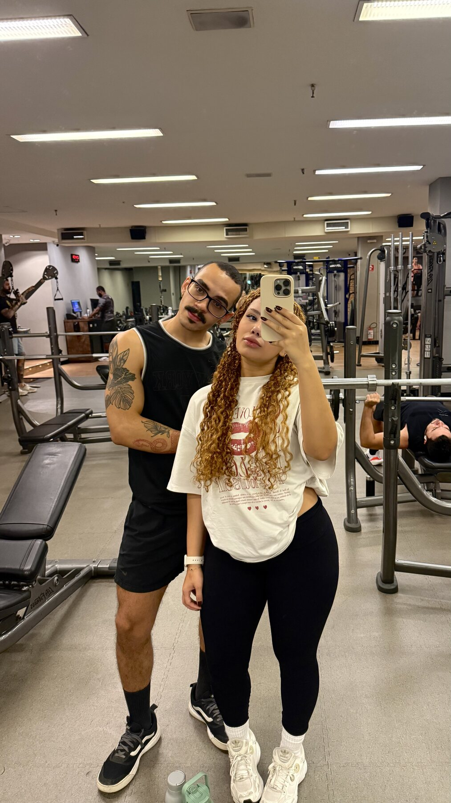
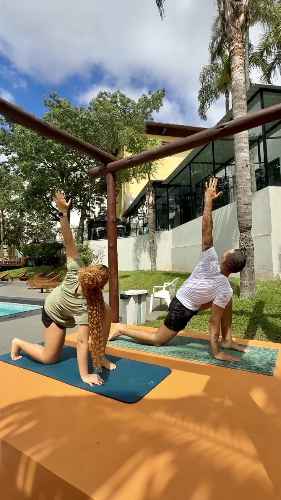

Observar
Perceber padrões, sinais e necessidades antes de agir no automático.
Move. Pause. Return.
Um método de wellness e desenvolvimento pessoal para transformar a forma como você se relaciona com seus hábitos, sua alimentação, suas emoções e sua rotina.
Valores e abertura das inscrições serão anunciados em breve.
01 — uma nova forma de cuidar
Você não precisa recomeçar do zero. Precisa aprender a observar, compreender e conduzir o ciclo em que já está.
Método The Cycle
The Cycle integra saúde, hábitos, emoções, alimentação e desenvolvimento pessoal. Por meio do ORLC, você aprende a observar o que acontece, revelar o que conduz suas escolhas, liberar o que já não contribui e criar um próximo passo possível.
Perceber padrões, sinais e necessidades antes de agir no automático.
Compreender o que pode estar conduzindo hábitos, emoções e decisões.
Abrir espaço para soltar excessos, culpas e caminhos que já não servem.
Construir escolhas possíveis, sustentáveis e coerentes com sua fase atual.
o método no cotidiano
Escuta do corpo, energia, descanso e escolhas de cuidado.
Consistência possível, sem depender de motivação perfeita.
Mais presença e consciência na relação com a comida.
Reconhecer o que sente e responder com mais clareza.
Conduzir mudanças respeitando seu ritmo e momento de vida.
o verdadeiro obstáculo
Quando você repete padrões sem perceber, até sabe o que precisa fazer — mas não consegue sustentar. O The Cycle ajuda você a interromper esse movimento, entender o que está acontecendo e escolher um próximo passo possível.
Quero sair do automático
Um método criado e conduzido
por Gui e Ana.
Cycle Club
Um espaço exclusivo para compartilhar práticas, descobertas e os movimentos da vida real. Você aprende com outras pessoas, encontra repertório para o cotidiano e conta com a presença de Gui e Ana conduzindo o grupo.
O acompanhamento acontece em grupo e não corresponde a atendimento individual.
como sua jornada começa
Você não precisa mudar tudo de uma vez. Começa entendendo onde está e escolhendo o próximo passo.
Preencha o Check-in e receba seu Mapa do Ciclo Atual.
Use o ORLC na saúde, alimentação, rotina e emoções.
Conte com ferramentas, encontros e comunidade para ajustar a rota.
escolha sua experiência
Os valores serão divulgados em breve. Por enquanto, conheça o que fará parte de cada experiência.
1 mês de acesso
Uma jornada de um mês para reconhecer seu ciclo atual, entender o que pede atenção e iniciar escolhas mais conscientes para sua saúde, alimentação e rotina.
3 meses de acesso
Três meses para praticar o método, observar padrões na alimentação, nos hábitos, na energia e nas emoções e construir uma rotina mais sustentável.
Tudo do Essential, mais:
6 meses de acesso
Seis meses para integrar o método à vida, acompanhar diferentes fases e sustentar mudanças com mais profundidade, ferramentas e experiências exclusivas.
Tudo do Plus, mais:
uma escolha acompanhada
Conte um pouco sobre sua rotina, o que deseja transformar e quanto tempo quer dedicar à jornada. A gente ajuda você a entender qual experiência faz mais sentido agora.
Falar com Gui e Ana no WhatsAppexclusivo premium
Dois encontros presenciais ao longo dos seis meses para viver o método com o corpo, a natureza e a comunidade, em experiências que podem reunir yoga, treino, meditação e práticas ao ar livre.
Duas experiências presenciais para viver o método. Seis Círculos Premium para conversar, adaptar e continuar.
perguntas frequentes
Não. O Cycle Club foi criado para ajudar você a construir uma rotina mais saudável, consciente e sustentável.
Você aprende o método desde o início e recebe orientação para aplicá-lo à saúde, alimentação, hábitos, emoções e desenvolvimento pessoal. A jornada começa exatamente de onde você está.
Acreditamos que mudanças se tornam mais possíveis quando não precisam ser vividas de forma isolada.
Você estará com outras pessoas que também estão desenvolvendo uma relação mais consciente com a saúde, a alimentação e a rotina. Gui e Ana conduzem a comunidade como mentores, com práticas, encontros e direcionamentos. Você participa no seu ritmo e não precisa se expor além do que se sentir confortável.
Não. O WhatsApp é um dos espaços de conexão, mas o Cycle Club é uma jornada estruturada.
Você começa com o Cycle Check-in e o Mapa do Ciclo Atual, aprende o método, recebe ferramentas e participa de encontros e retornos. A comunidade mantém essa jornada viva no cotidiano.
Isso também faz parte do processo. O Método The Cycle não exige constância perfeita.
Você aprende a perceber quando se afastou, compreender o que aconteceu e adaptar sua saúde, alimentação, hábitos e rotina sem transformar cada interrupção em um recomeço do zero.
Gui e Ana conduzem o Cycle Club como mentores da comunidade. Eles apresentam temas, orientam a aplicação do método e conduzem os Encontros Coletivos.
No Premium, também conduzem os Círculos Premium, voltados às dúvidas e situações reais do grupo. A experiência acontece de forma coletiva e não corresponde a atendimento individual ou disponibilidade permanente por mensagem.
Todos os planos ensinam o Método The Cycle desde o início. O que muda é o tempo e a profundidade para aplicá-lo à sua saúde, alimentação, rotina, emoções e desenvolvimento pessoal.
Essential, 1 mês: para reconhecer seu ciclo atual, entender o que pede atenção e iniciar escolhas mais conscientes, com método, comunidade e direção.
Plus, 3 meses: para praticar por mais tempo, observar padrões na alimentação, nos hábitos, na energia e nas emoções e construir uma rotina mais sustentável.
Premium, 6 meses: para integrar o método à vida com mais profundidade, acompanhar diferentes fases e sustentar mudanças com ferramentas, Círculos Premium e experiências exclusivas.
Essential inicia. Plus aprofunda. Premium sustenta.
Ainda está em dúvida? Conte um pouco sobre o momento que está vivendo e a gente ajuda você a entender qual experiência faz mais sentido para sua rotina.
O Cycle Club foi pensado para entrar na sua vida, não para se tornar mais uma obrigação.
Você terá materiais, práticas, encontros e retornos, mas poderá avançar respeitando o seu ritmo. O mais importante não é fazer tudo, e sim aplicar o método e aprender a continuar quando a vida mudar de ritmo.
O Encontro Coletivo acontece mensalmente para todos os planos. Gui e Ana apresentam um tema da vida real, conduzem a aplicação do método e propõem uma prática e um próximo passo.
O Círculo Premium é exclusivo do Premium e tem foco nas dúvidas, conversas e situações reais dos participantes, ajudando o grupo a adaptar escolhas e encontrar novas formas de continuar.
As ferramentas ajudam você a observar seu momento, aplicar o método e transformar percepção em prática.
Cycle Check-in: ponto de partida para compreender seu momento.
Mapa do Ciclo Atual: leitura personalizada com foco e direção.
Guia Essencial: apresenta o método e o ORLC.
Guia Prático: aprofunda a aplicação na saúde, alimentação, rotina e desenvolvimento pessoal.
Diário ORLC: registra padrões, escolhas e aprendizados.
Guia do Retorno: orienta pausas e retomadas sem culpa.
Cycle Planner: organiza intenções e ajustes ao longo da jornada Premium.
Cada ferramenta é liberada conforme o plano e o momento da experiência.
Depois da entrada, você recebe as boas-vindas, acessa a comunidade e preenche o Cycle Check-in.
A partir dele, recebe o Mapa do Ciclo Atual, conhece o Método The Cycle e inicia um primeiro movimento com direção. Os materiais, encontros e retornos são apresentados ao longo da jornada, de acordo com o plano escolhido.

o próximo ciclo começa com uma escolha
Se você sabe o que precisa fazer, mas se perde no piloto automático, o The Cycle oferece método, direção e uma comunidade para ajudar você a continuar.